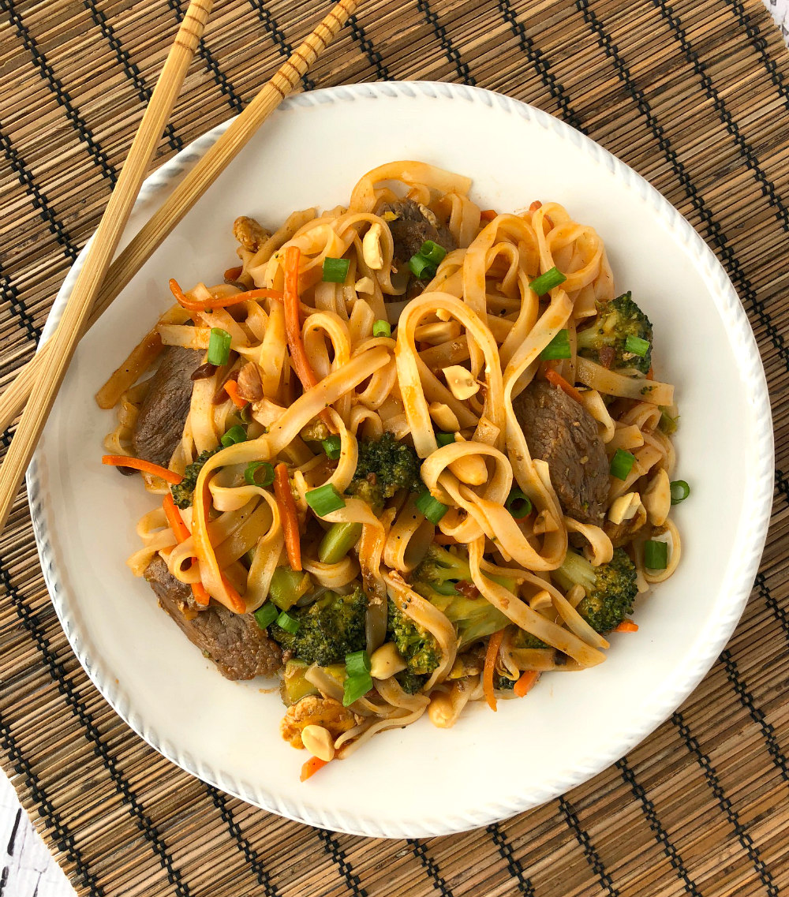
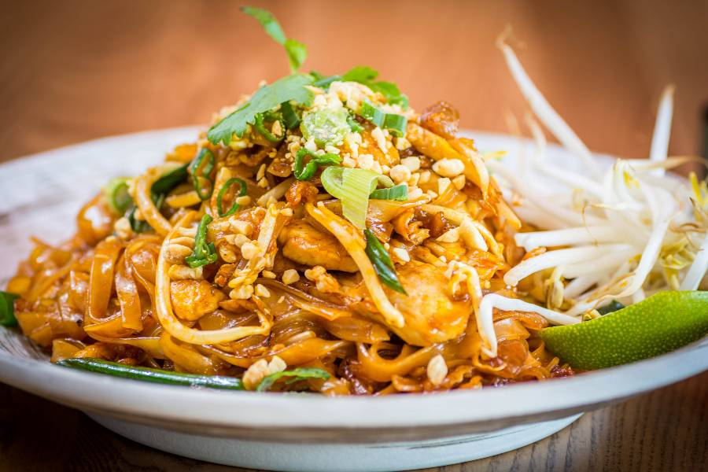

Coaches Beef Pad Thai Recipe

Pad Thai has been a staple for the Dallas Cowboys, ever since I have been playing with them
The recipe has been passed down for generations in my family. I have not even shared the recipe
with the Cowboys, which has resulted in a few allergic reactions.
People are often intimidated by the art of making pad thai, but I assure you, you have nothing
to fear. Making pad thai is one of the easiest things that you can make. So with out further ado,
here is Strong Coach Rayes Pad Thai!

Ingredients
- 8 Ounces flat rice noodle
- 3 tablespoon oil
- 3 cloves garlic, minced
- 8 ounces uncooked shrimp, chicken, or extra-firm tofu, cut into small pieces
- 2 eggs
- 1 cup fresh bean sprouts
- 1 red bell pepper, thinly sliced
- 1/2 cup dry roasted peanuts
- 2 limes
- 1/2 cup fresh cilantro, chopped
For the Pad Thai Sauce
- 3 tablespoons first sauce
- 1 Tablespoon low sodium soy sauce
- 5 Tablespoon light brown sugar
- 2 Tablespoon rice vinegar, or tamarind paste
- 1 Tablespoon Sriracha hot sauce, or more, to taste
- 2 Tablespoon creamy peanut butter
Cooking Instructions
- Cook noodles according to the package instructions, just tender. Rinse under cold water.
- Make suace by combining sauce ingredients in a bowl. Set aside
- Stir Fry:: Heat 1½ tablespoons of oil in a large saucepan or wok over medium-high heat. Add the shrimp, chicken or tofu, garlic and bell pepper. The shrimp will cook quickly, about 1-2 minutes on each side, or until pink. If using chicken, cook until just cooked through, about 3-4 minutes, flipping only once.
- Push everything to the side of the pan. Add a little more oil and add the beaten eggs. Scramble the eggs, breaking them into small pieces with a spatula as they cook.
- Add noodles, sauce, bean sprouts and peanuts to the pan (reserving some peanuts for topping at the end). Toss everything to combine.
- Garnish the top with green onions, extra peanuts, cilantro and lime wedges. Serve immediately!
- Store leftovers in the fridge and enjoy within 2-3 days.